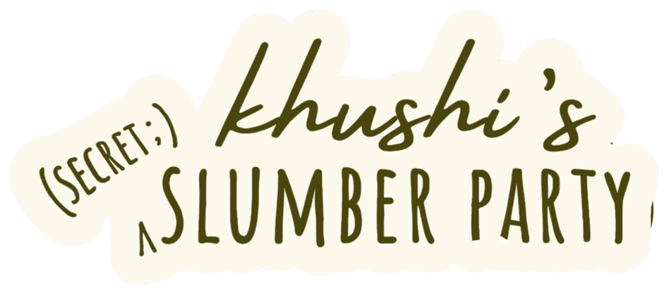

messages
tap to open ▸
want in?
01 / 07
what's your name?
how old are you?
where are you based?
and who are you?
your instagram?
your number?
best email?
your idea of a perfect slumber party?
your name's with khushi now.if you're one of the thirty, we'll whisper back.
khushi's arcade
high scores
slumber snake
collect the pillows.don't bite your own boa.
leaderboard
